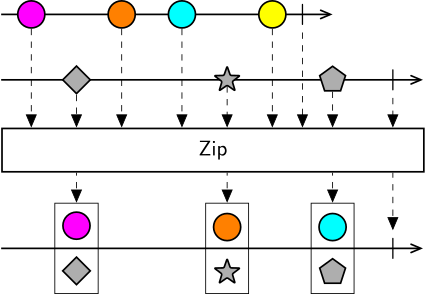

Zip combines the items from each sequence in strict sequential order. It will combine the first item emitted by sequence #1 with the first item emitted by sequence #2; then the second item emitted by sequence #1 with the second item emitted by sequence #2, and so forth, regardless of the timing of arrival of the values. It will only emit as many values as the number of values in the shortest sequence.
Zip can be useful to combine separate processing branches from a single source into a composite result, or when pairing events which are logically related even though they might arrive far apart in time, e.g. request/response pairs from a server, or pairing camera frames with frame trigger event onsets.
Warning
Zip will continuously store unpaired values from all source sequences, with no limit to the buffer size. This means that if one source sequence produces a much larger number of values than the other sequences, memory usage will continue to grow unbounded. In general, Zip should be used only when there is a known fixed relationship between number of elements in each of the source sequences.
Higher-order operator
Zip also works as a higher-order operator, so it can take as input a sequence of observable sequences. In this case, it will subscribe to each of the source sequences and start collecting all emitted values from each sequence. As soon as the outer sequence terminates, it will start reactively combining values in sequential order, just as in the case of using Zip with a fixed number of inputs.

The higher-order variant can be useful occasionally, for example when combining frames from an unknown number of videos in a folder, but should be used with care and awareness that reactive pairing only starts after the outer sequence terminates, which means its use should be avoided with infinite sequences.